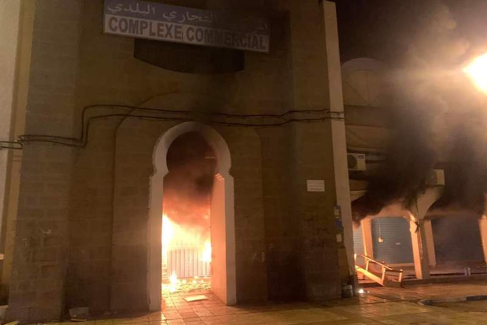
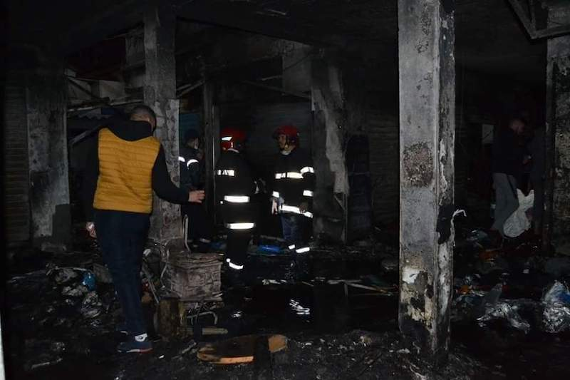

كاريكاتير اليوم


احتراق المركب التجاري البلدي ينشر الحزن بين الساكنة في الناظور
عاشت الناظور أحداثا مثيرة مع اندلاع حريق مهول بسوق المركب التجاري البلدي وسط المدينة، الذي يعد أحد أكبر المراكز التجارية بالحاضرة ذاتها. وتسبب الحريق في خسائر فادحة بعد احتراق 22 محلا تجاريا، ضمنها 10 محلات احترقت بالكامل، بسلعها المتنوعة، من ملابس للرجال والنساء وأحذية وأجهزة إلكترونية وهواتف وحواسيب ومستلزماتها.
حريق مأساوي أعاد إلى الأذهان سيناريو احتراق المركب التجاري الكبير المعروف لدى عموم ساكنة الناظور بـ”سوبر مارشي” سنة 2014، الذي تسبب في خسائر فادحة لتجاره وحرمانهم من ممارسة نشاطهم التجاري إلى حدود الآن.
شهادات المتضررين
خلف الحريق المأساوي صدمة كبيرة لدى تجّار السوق الذين فقدوا محلاتهم التجارية بكل محتوياتها في ليلة واحدة. في هذا الصدد، قال متضرر احترق محله التجاري الخاص ببيع الألبسة: “فقدت رأسمالي كله، لم أعد أملك شيئا”، وأضاف بحسرة: “كان المحل مليئا بالسلع، إضافة إلى مبالغ مالية وأوراق مهمّة.. احترق كل شيء”.
وعلّق آخر: “إنها أكبر صدمة عشتها في حياتي، فقدت كلّ شيء في ليلة واحدة. حاولت رفقة بعض معارفي استخراج السلع لكنّ ألسنة اللهب انتقلت بسرعة، وفي رمش عين احترق المحلّ بكلّ ما فيه”، وأضاف: “حدثنا بعض المسؤولين الذين زارونا اليوم، ووعودنا بإيجاد حلول من أجل تعويضنا، هذا كل ما في الأمر”.